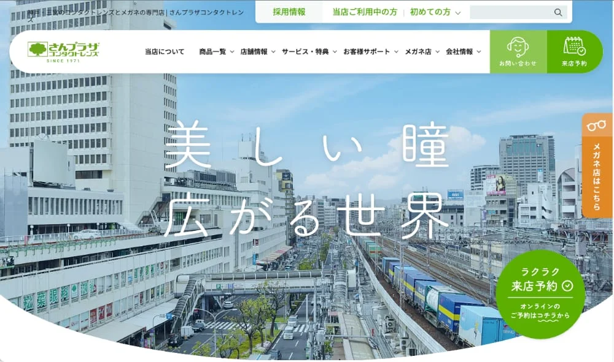

SEO対策 / ホームページ制作
さんプラザコンタクトレンズ
月間アクセス数 3.2倍達成
詳しく見る →
多くのホームページ制作会社は「制作して納品」で終わります。しかしホームページは作った後が本番。セルフアチーブは戦略設計から制作・SEO・分析改善まで一貫して伴走し、ビジネスの成果を追求します。
「誰に・何を・どう伝えるか」を明確にしてから制作を開始。ターゲット設定・競合分析・キーワード戦略まで、戦略設計を制作の前段階として必ず行います。
サイト構成・ワイヤーフレーム・コピーライティングまで一貫対応。「何を伝えるか」のコンテンツ設計を重視し、訪問者が行動を起こしたくなるサイトを構築します。
制作段階からSEOを設計に組み込みます。タイトル・メタ情報・構造化データ・内部リンク・ページ速度まで、Googleに評価され、AIで紹介されるサイト構造を標準実装します。
公開して終わりではなく、Googleアナリティクス・サーチコンソールによるデータ分析・改善提案を継続。訪問者数・問い合わせ数の向上を数値で追いかけます。
FREE CONSULTATION
「何から始めればいいかわからない」という段階でも構いません。
現状のヒアリングから、最適な施策をご提案します。
お電話でのご相談
078-806-8338OUR WORKS
制作フェーズと改善フェーズ。
セルフアチーブは、納品で終わらず「成果が出るまで」伴走します。
CLIENT VOICES
YOUR CHALLENGE
WEBで成果が出ない理由は、必ずあります。
課題を特定し、最適な施策を設計します。
01
なんかうまく
いかない...
何が問題かわからない。施策を試しても手応えがない。まず現状を整理したい。
検索で見つけてもらえない。広告を出しても費用対効果が悪い。もっと多くの見込み客に届けたい。
アクセスはあるのに成約しない。サイトを見ても離脱してしまう。訪問者を顧客に変えたい。
リピーターが増えない。既存顧客との関係を維持したい。ファンを育てる仕組みをつくりたい。
手作業が多く時間がかかる。AIを使いたいが何から始めればいいかわからない。業務の無駄を省いて生産性を上げたい。
FAQ
制作するサイトの規模・機能・デザインの複雑さによって異なります。まずは無料相談にてご要望をお聞きし、最適なプランと費用をご提案します。小規模なコーポレートサイトから大規模なECサイトまで対応可能です。
一般的なコーポレートサイトで1〜2ヶ月、LP（ランディングページ）で2〜3週間が目安です。ただし、ページ数・機能・コンテンツの準備状況によって異なります。詳細はヒアリング後にお伝えします。
はい、弊社のホームページ制作にはSEOの基礎設計（タイトル・メタ情報・構造化データ・ページ速度最適化など）が含まれます。さらに本格的なSEO対策をご希望の場合は、SEO対策サービスとの組み合わせをご提案します。
はい、WordPressでの制作に対応しています。お客様自身でコンテンツを更新・管理できるよう、使いやすいCMS環境を構築します。更新方法のレクチャーも行います。
はい、制作後の保守・運用サポートプランをご用意しています。サーバー・ドメイン管理、WordPressのアップデート、コンテンツ更新代行、アクセス解析レポートなどを月額でサポートします。
はい、既存サイトのリニューアルにも対応しています。現状のサイトの課題分析から始め、SEO・デザイン・コンバージョン率の改善を目的としたリニューアル提案を行います。
SERVICE AREA
神戸市を中心に、兵庫県全域および近隣府県の中小企業・店舗の集客支援を行っています。オンラインにて全国対応も可能です。
柔軟にお伺いできます
お伺いには調整が必要です
オンラインで対応
※まずはお気軽にご相談ください。対面・オンラインのどちらでも対応可能です。
FREE CONSULTATION
「何から始めればいいかわからない」という段階でも構いません。 現状のヒアリングから、最適な施策をご提案します。
お電話でのご相談
078-806-8338